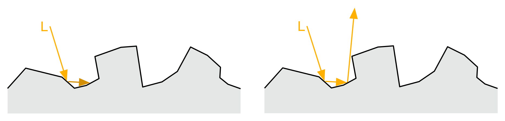
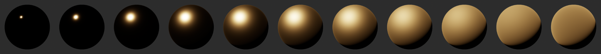
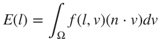
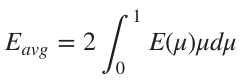
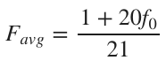
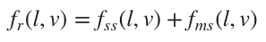
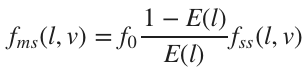
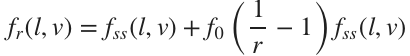
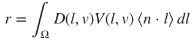

优化BRDFs
我们在前面提过能量守恒是一个优秀的BRDF的关键指标之一。不幸的是，我们在其中测试到了两个问题，下面将讨论这两个问题。
漫反射能量增益
待续
镜面反射中的能量流失
我们前面提到的Cook-Torrance BRDF尝试去模拟在微平面层面上的, 但那是建立在单次反射的基础上的。在单次反射模拟中，如果一束光在射在某一平面，然后又反射回另一个平面，结果就是它会被忽略。如果是多次反射模拟，同样一束光可以在两次或两次以上反射后离开平面，进入观察者眼中。
 单次散射 VS 多次散射
基于上面的解释，我们可能会不由自主地想到，在非多次散射模拟下，是不是一个表面越粗糙，入射光流失的能量越多。这种能量损失可能会使粗糙的材质变暗。金属表面受影响特别大，因为他只有镜面反射。
下图展示了这种变暗效应：  单次反射：随着粗糙度增加，变暗效应越来越明显
下图
 多次反射：防止了能量流失
多次反射：防止了能量流失
我们再做一个实验来验证一下。我们把一个金属球体置于一个充满一致的纯白环境光的环境中。如果有没有能量流失时，它的金属表面(f0 = 1)应该始终无法与背景区分开，也就是说你应该看不到这个球体。
单次反射：变暗效应越来越明显
 多次反射：能量保存
多次反射：能量保存
一般的多反射微平面BRDF并不适用于实时渲染。Kulla and Conty另辟蹊径Kulla17,他们进行了能量补偿。公式如下：

其中，E是当f0 = 1时，镜面反射分量fr的定向反射率。

Eavg是E的平均cos权重：

Favg是菲涅尔项的平均cos权重：
E和Eavg都能被提前计算好，并存在查询表中。同时，Favg也能用Schlick近似大大简化。

将这个新lobe与原来的单反射lobe结合：

Favg可以被简化成f0,同时可以添加一个GGX高光lobe来进行能量补偿。

关键是E(l)不仅仅能够被提前计算，还可以与基于图像的照明预集成进行共享。最后，多反射能量补偿公式如下：

r被定义为：

[Kulla17] Christopher Kulla and Alejandro Conty. 2017. Revisiting Physically Based Shading at Imageworks. ACM SIGGRAPH 2017